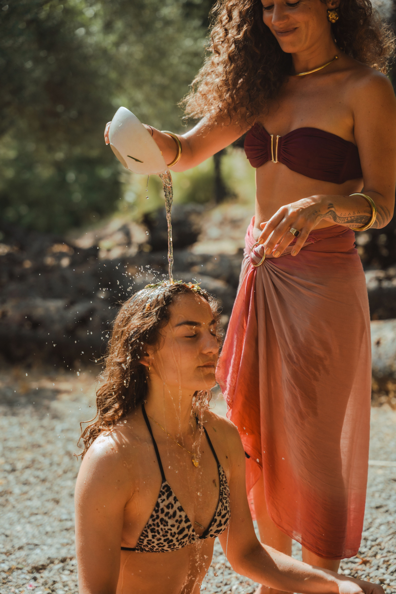
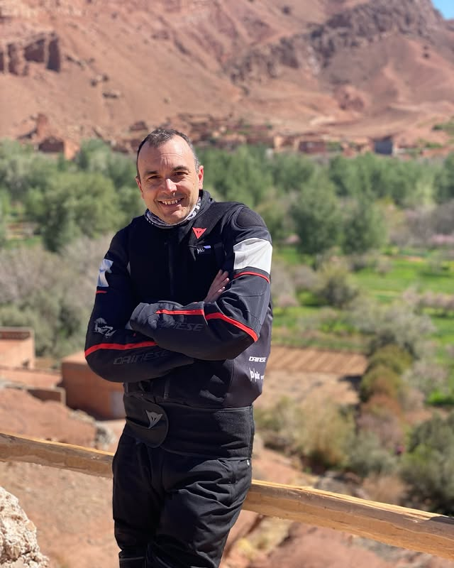
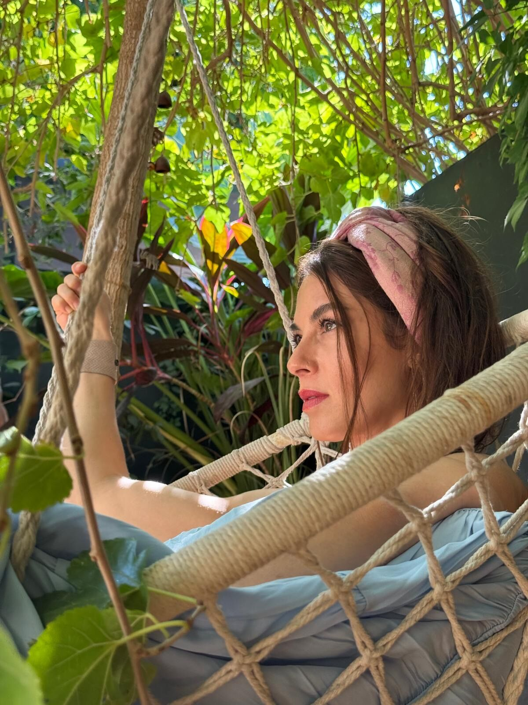

Yoga · Sound · Breathwork · Self-Realization
You were always whole.
This is where we begin.
Tat Tvam Asi
You Are That.
तत् त्वम् असि

Kṛtajñatā · The Gate
Gratitude — The Gate to the Self
Gratitude is the closest state to enlightenment. When you are truly grateful — a natural overflowing of the heart — the self becomes transparent. From that arises the recognition: you were never separate. You were always whole.
“At some point the story gets exhausting.
Who am I beneath all of this?”
From Drama to Dharma
Yatra · Sacred Journeys · 2026
Retreats

“You can be a victim or the Creator.
The choice is yours”
The Offerings · Four Pillars
The Offerings
Each pillar is a different doorway to the same place — the stable, always-connected self that was never truly away.
Ashtanga Vinyasa Yoga
योगAshtanga Vinyasa Yoga is a core practice of building grounding strength, rewiring the nervous system, and bringing your focus to centre. It is my rock.
Nāda & Mantra
नादSound meditation, mantra, vocal transmission. The name and vibration of God carried through voice and instruments. Julia's most irreplaceable gift.
Pranayama / Clarity Breathwork
प्राणPranayama and breathwork rewire the system through the pranic vessels of breath. Returning to centre. Creating space for the divine to enter.
Self-
Realisation
अद्वैत
Advaita is the end of all knowledge. It transcends the illusion of the mind, dissolves the limiting beliefs that keep us bound, and lets us return to the true Self.
You are everything and you are nothing. The Universe holds both.
You can shape your life into something luminous and full. This human experience is a gift to be lived boldly, joyfully, completely.
And yet. Nothing is permanent. Everything that rises will dissolve. The form, the achievement, the identity — all of it is passing through.
The tool that keeps you in balance between these two truths is humility. Not the humility of smallness or self-diminishment. But the humility of one who knows they are a vessel. Who creates freely, loves fully, and holds it all lightly.
Nothing belongs to you. Everything is given.


Julia Grant-Scott
Yoga · Sound · Breathwork · Self-Realization
The lotus grows from the mud.
Everything you have experienced in life
is the building block of who you are becoming.
I have lived in many colors — joy, pain, wildness, suffering, tenderness, rupture, and grace. No matter what the story is, the meaning of it all is this: every experience is heritage. It nourishes the soil from which we grow.
My parents were my first teachers. They showed me what to follow, what to do — and what is definitely not the right thing. And just like anyone, I had a choice: take it as my strength, or carry it as my weakness. That choice belongs to me.
I was born in Kazakhstan — raised in the wildness of high mountains and the vast empty spaces of the steppe. I was fed on raw horse milk, black caviar, and wild apples from the neighbor's garden. I remember standing and shaking with anticipation as my neighbor milked the cow, waiting for that first warm glass. That land gave me something unnameable — crystal clear cold rivers, the smell of extraordinary food, sky that went on forever.
It also gave me the full human experience: incredible pain, rupture, beauty, tenderness. All of it. All mine. And also — just a story.
These are the unique ingredients. Everything needed to become me. And you have everything needed to become you.
I have walked through acting, through Buddhist practice, through plant medicine, through complete loss of self — and through the crack of something much greater on the other side. What I found was not a new version of myself. It was a remembrance of the one who was always there.
Today I work at the intersection of Ashtanga Vinyasa Yoga, Sound, Breathwork, and Self-Realization — not as separate modalities, but as one integrated path back to who you really are. I hold retreats across Europe and beyond for those who have searched long enough, tried everything, and are ready to stop seeking and start remembering.
Nāda Yoga · Sound as Medicine
Nāda Brahma
God is sound. Sound is God.
ॐ
ıllıllı ıllıllı ıllıllı
The name and vibration of the divine, carried through mantra and sacred instruments, bypasses the thinking mind entirely.
It speaks directly to the soul. To the part of you that always knows.
Yoga Sūtra 1.28
तज्जपस्तदर्थभावनम्।
Tat japaḥ tad-artha-bhāvanam.
"Through its repetition and dwelling upon its meaning, the divine is revealed."
☽ Let it inSangha · The Community
Words from the circle

"One of the most transformative experiences of my life."
Julia creates a thoughtfully curated space — dance, music, yoga, woven with deep presence and attentiveness to oneself and others. Far more than a retreat: a healing journey inward and a way to self-empowerment.

"The union of movement, sound and medicine Julia holds is a true form of healing."
It strips you bare — gently, but unmistakably — guiding you into the truth. The moment you surrender, love and answers begin to arise. Every ceremony is held in truth, love, and gratitude. I remain forever grateful to my spiritual sister Julia.

"A gateway to healing — and a magical way to plant a new narrative in your story."
Each of us has a story. We go through a long journey to meet the spiritual teacher who resides within us — and when we find it, we realise we have the power to create and tell our story anew. Julia's healing sound workshop, guided by her enchanting voice, is exactly that gateway.

"Her presence felt like a remembrance — wild, grounded, and deeply attuned."
I first met Julia during an Ashtanga Yoga workshop in Wrocław, 2020. Her presence felt like a remembrance, a deep recognition of something both wild and grounded within the feminine. She carries a rare balance of depth and playfulness, humility and insight. There’s an embodied quality in her that stirs something profound — an expression of Shakti that feels powerful, untamed, and deeply attuned. Her sound journeys are just as touching: there is something in her voice, soft yet penetrating, that seems to move through the body, creating space, resonance, and connection. Julia holds space with authenticity and grace. Being with her is an invitation to reconnect with something essential within yourself.
Begin · Reserve Your Place
Step in
Every retreat, every session, every moment of sound begins from the same place: you are already whole. Reach out to enquire about an upcoming retreat, a 1:1 session, or to simply begin a conversation.
"I share this not so you carry my story, but so you remember your own."